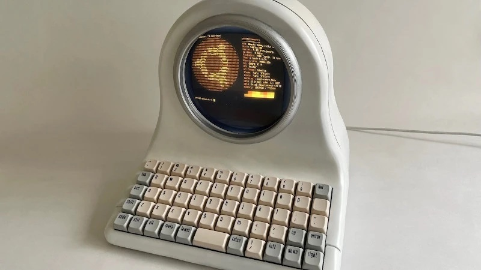
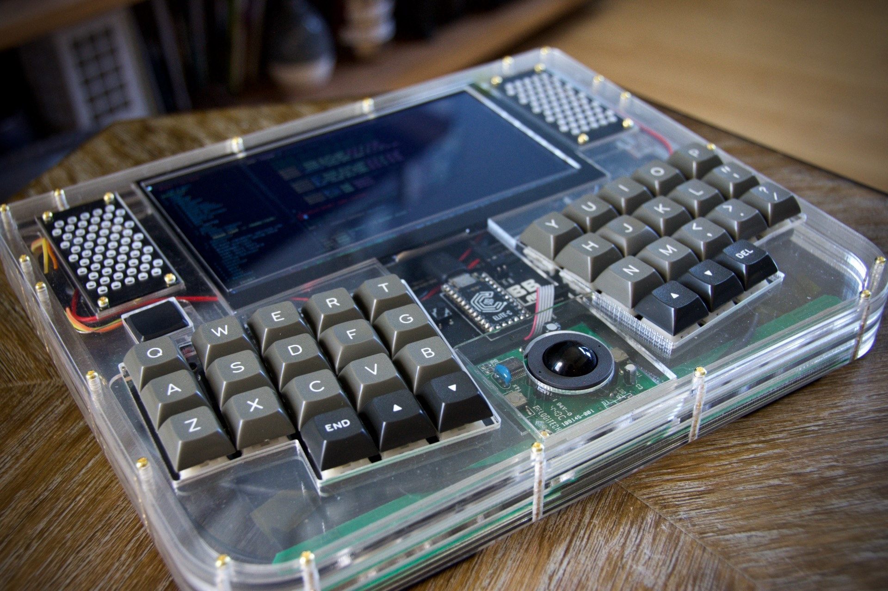

Frameworkの旧式マザーボードの設計がオープンになったようです。 ボード単体での販売もしています。
Raspberry Piと比べてはるかに高性能なインテルCPU搭載のボードで、オリジナルの持ち運びできるPC的ガジェットを作る際の素材として活用できそうです。
以下のようなユニークなPCを作るための材料として活躍しているようです。
FRAMEWORK BOARD GETS THIS ROUND DISPLAY PC ROLLING



← 前の記事 - PICで作ったたまごっち

次の記事 - コンパクトで上下反転した構造が特徴的な3DプリンターPositron →